整廠節能規劃 · 穩定供氣 · 20 年現場經驗
深耕台中 13 年，團隊成員平均從業逾 20 年。我們不只賣機器，更擅長從系統整體角度規劃壓縮空氣節能方案——從漏氣診斷、壓力優化到 VFD 換型評估，協助精密機械、電子、紡織、印刷等製造業客戶實現穩定供氣與最大節電效益。
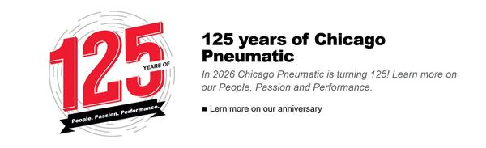
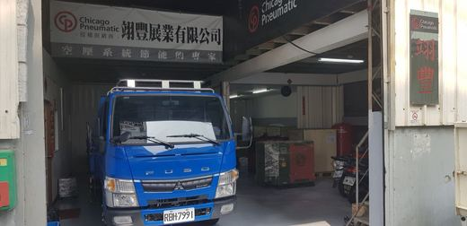
翊豐展業有限公司成立逾 13 年，是 Chicago Pneumatic（Atlas Copco 集團授權）在台灣的專業經銷商。核心團隊成員從業經驗均超過 20 年，不只熟悉機台本身，更深入了解各類製程的實際用氣需求。我們最擅長的，是從整廠系統角度規劃壓縮空氣節能方案：從用氣量稽核、管路施工、多機聯控到停機備援，協助中彰投製造業客戶實現可量化的節電成效，並協助申請政府節能補助。
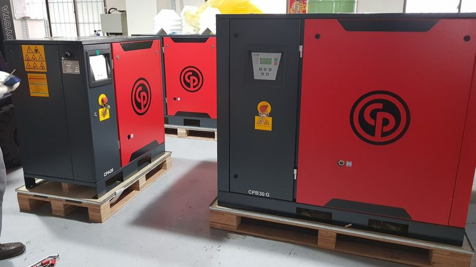
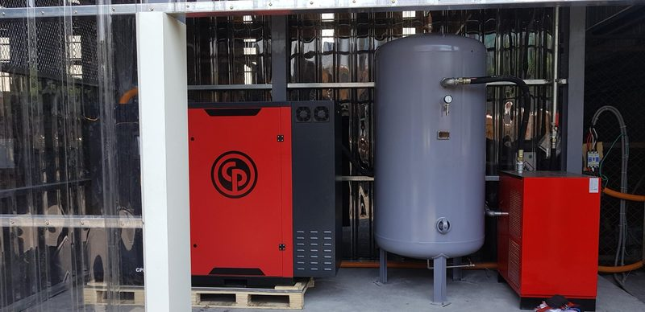
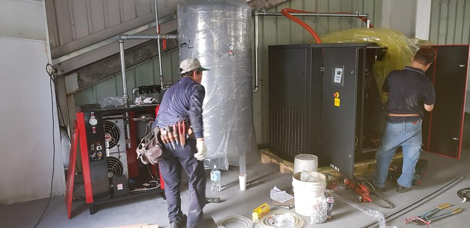
從精密機械廠到冷鍛加工廠，翊豐展業提供完整的空壓系統規劃、安裝調試與售後保養服務。
Chicago Pneumatic 空壓機隸屬 Atlas Copco 集團壓縮空氣技術事業群，繼承集團150年壓縮技術研發成果，以下為核心技術優勢。
傳統螺旋壓縮機採用對稱轉子，而 Atlas Copco 自主研發的非對稱轉子（雄轉子5齒、雌轉子6齒）是其核心競爭力：
Atlas Copco 採用內置永磁（IPM）同步馬達搭配高效能變頻驅動（VSD），實現壓縮機輸出與用氣需求的精準匹配：
壓縮機主機、馬達、變頻器、冷卻系統、控制器整合於單一機艙，較分離式系統節省 30% 機房空間，整機噪音低至 62 dB(A)，遠低於同級競品 68～76 dB(A)。
從機械幾何、環境條件到熱力學損耗——深入理解排氣量的每一個影響環節，才能真正選對機型、用對壓力，實現最大節能效益。
容積效率是評估主機健康度與系統真實效能的終極指標。理論排氣量與實際排氣量之間的損耗，可分為三大來源：
K_13 為 ISO 1217 冷凝水修正因子；q_VR 為現場實際讀取體積流量。現場條件（高溫 35°C、濕度 85%、海拔 500m）必須嚴格換算，避免環境變數掩蓋設備老化的真相。
依據 Q = (Σ 設備耗氣量 × 使用頻率) × (1 + 洩漏率) × (1 + 擴展係數) 公式，輸入工廠實際設備數據，即時計算所需空壓機 FAD 容量。
Chicago Pneumatic 空壓機通過多項國際認證，確保性能數據真實可靠，符合各行業最嚴格的空氣品質與安全規範。
提供多元化機型，涵蓋定速、變頻（VFD）、無油等系列，滿足不同產業與用氣量需求。
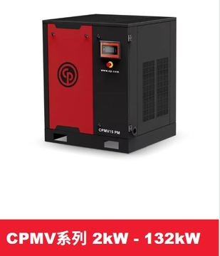
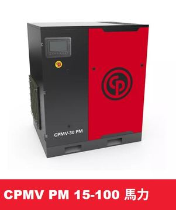
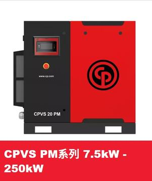
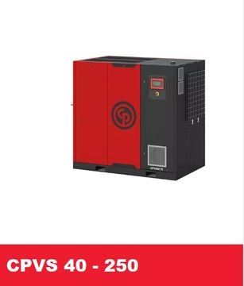
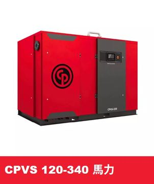
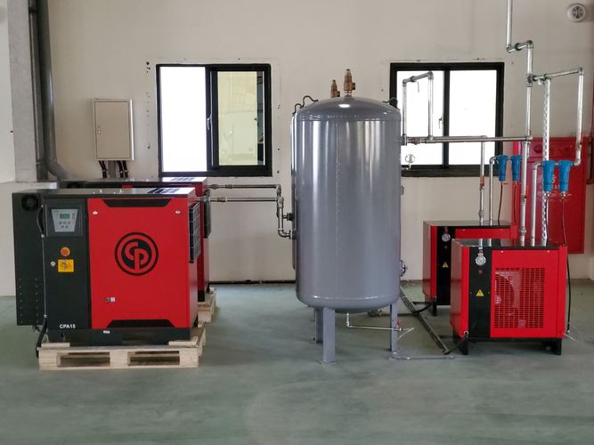
以下為 Chicago Pneumatic 主要螺旋式空壓機系列代表機型規格，出風量依 CAGI ACFM 標準。
| 機型 | 類型 | 功率 (HP) | 工作壓力 (psi) | 出風量 (ACFM) | 噪音 dB(A) | 適用行業 |
|---|---|---|---|---|---|---|
| CPM / CPD 系列 | 定速 | 5–50 HP | 100 / 125 / 150 | 17–238 ACFM | 62–70 | 輕工業、印刷、紡織 |
| CPD / CPE 系列 | 定速 | 75–120 HP | 100 / 125 / 150 | 238–600 ACFM | 70–74 | 精密機械、電子 |
| CPF 系列 | 定速 | 250–350 HP | 100 / 125 / 150 | 900–1,800 ACFM | 77–80 | 重工業、大型廠 |
| CPVS 30–50 | 變頻 VFD | 30–50 HP | 100–145 | 35–239 ACFM | 67–70 | 用氣波動中小型廠 |
| CPVSM 40–120 | 變頻 VFD | 40–120 HP | 100–145 | 29–450 ACFM | 71–76 | 節能優先製造業 |
| CPVS 40–250 | 變頻 VFD | 40–250 HP | 100–175 | 54–905 ACFM | 70–80 | 中大型廠、重工業 |
| SPR Oil-Free | 無油 | 3–40 HP | 100–125 | 依機型 | 依機型 | 半導體、醫療、食品 |
從精密機械到食品飲料，翊豐展業提供符合各行業規範的壓縮空氣系統。
輸入您的設備資訊，即時計算年度電費支出、節能差異及投資回收年數。
經濟部能源署每年開放「動力與公用設備」節能補助申請，換購高效能空壓機最高可補助 NT$500萬元，中小企業可再加成 1.2 倍。翊豐展業協助您完整申辦。
| 產品類型 | 3.7–75kW | >75–200kW |
|---|---|---|
| 可變轉速迴轉式 （高效能，d≥30） |
3,200 元/kW |
3,000 元/kW |
| 可變轉速迴轉式 （d≥25） |
1,500 元/kW |
1,200 元/kW |
| 固定轉速迴轉式 （d≥25） |
2,500 元/kW |
2,400 元/kW |
壓縮空氣看似無形，卻直接影響產品品質、設備壽命與製程安全。不同產業對空氣品質的要求差異極大——食品廠與精密機械廠所需的潔淨等級截然不同。翊豐依據 ISO 8573-1:2010 國際標準，協助客戶評估製程需求、規劃正確的後處理設備組合。
| 等級 | 粒子（0.1–0.5μm，個/m³） | 壓力露點（°C） | 含油量（mg/m³） | 典型適用產業 |
|---|---|---|---|---|
| Class 0 | 客製規格 | 客製規格 | 客製規格 | 醫療器材、半導體 |
| Class 1 | ≤ 20,000 | ≤ −70°C | ≤ 0.01 | 食品飲料、製藥、電子 |
| Class 2 | ≤ 400,000 | ≤ −40°C | ≤ 0.1 | 精密機械、紡織、印刷 |
| Class 3 | ≤ 4,000,000 | ≤ −20°C | ≤ 1 | 一般製造業、汽車零件 |
| Class 4 | — | ≤ +3°C | ≤ 5 | 金屬加工、氣動工具 |
不同製程、不同設備對空氣品質的要求差異很大。翊豐依據您的產業別與製程說明，免費提供 ISO 8573-1 等級建議與後處理設備選型規劃；若需現場實際量測露點或含油量，可進一步安排專業儀器檢測服務。
許多工廠換了新機卻沒有節到電，原因往往不在機器本身，而在整體系統設計。翊豐團隊擁有逾 20 年現場經驗，從源頭用氣評估到末端管路施工，提供一套完整的節能規劃流程，協助工廠找出真正的耗能癥結，實現可量化的節電成效。
壓縮空氣系統通常占工廠用電量的 20–40%，是節能最大潛力所在。翊豐展業提供系統性節能改善方案。
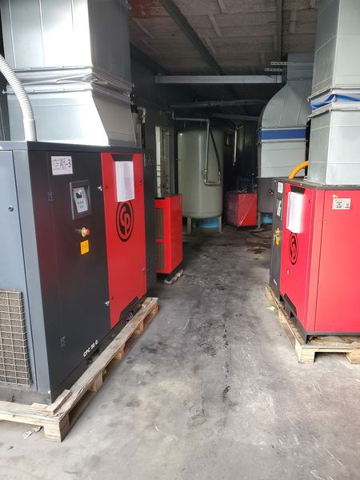
三套專業計算工具，評估現況問題與改善效益。數據僅供參考，翊豐展業提供免費到廠精確診斷。
輸入管路洩漏孔口直徑及系統條件，計算每年洩漏電費損失。
※ 以上計算結果為估算參考值，實際節能效益依設備型號、使用條件、管路狀況而異。
翊豐展業提供免費到廠能源診斷，出具書面報告，協助申請政府節能補助。
→ 預約免費診斷
以下為翊豐展業輔導完成的真實節能案例（客戶資訊依保密協議匿名化）。每個案例均有量化成果，供採購評估參考。
原有 60HP 定速空壓機三台，用氣量波動大，離峰時卸載率高達 60%。評估後換裝 Chicago Pneumatic CPMV PM 變頻機兩台，搭配壓力優化設定。
廠內包裝及輸送製程用氣量波動明顯，原有 50HP 定速機兩台，離峰卸載率達 55%，電費居高不下。翊豐展業進行整廠節能診斷，發現供氣壓力設定偏高且管路存在多處洩漏，建議降壓並換裝 Chicago Pneumatic 變頻機一台，搭配原機作備用。
廠內使用老舊 75HP 定速空壓機，長期滿載運轉，備用機常態啟動，用電量龐大。經六步驟節能診斷評估，確認換裝變頻機型可有效降低離峰耗電，同步協助申請能源署節能補助，補助金額抵銷近四成設備費用，大幅縮短投資回收期。
※ 節能成果依各廠房用氣狀況、電價、設備規格而異，以上數字僅供參考，正式評估請聯繫翊豐展業進行免費節能診斷。
針對台中中彰投地區主要製造業，整理空壓機選型與節能的常見問題。
整理客戶詢問最多的五大問題，協助您在採購或申請補助前快速了解重點。
請填寫下方表單，我們將於一個工作天內回覆。或直接致電，與專業顧問立即溝通您的需求。